Brakes - Vibration/Pulsation Upon Application
46 11 06April 18, 2011
2015173 Supersedes T.B. V461005 dated October 25, 2010 to remove Canadian market and include additional models and model year applicability.
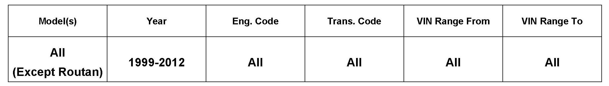
Vehicle Information
Condition
Brake Disc, Pulsation, All Vehicles except Routan (U.S. Only)
When applying brakes at highway speeds the following symptoms may occur:
^ Brake pedal may pulsate
^ Vibration may be felt in vehicle body
^ Steering wheel may shake
Note:
The procedure as follows outlines the recommended repair process for brake vibration/pulsation concerns.
Technical Background
For brake vibration / pulsation concerns, brake disc machining is now allowed between 6 months / 6000 miles (9656 km) and 12 months /12,000 miles of the warranty in service date.
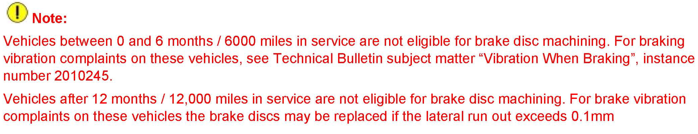
Note:
Production Solution
No production change required.
Service
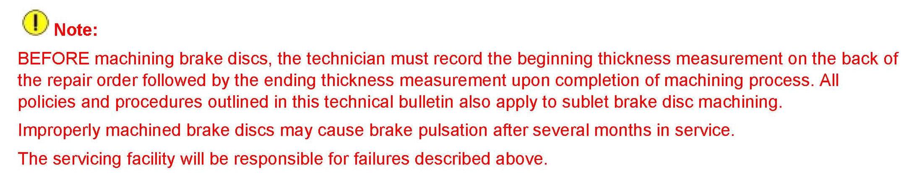
Note
Procedure:
^ Remove wheels and separate brake calipers from carrier as outlined in Repair Manual Group 44 - Wheels, Tires, Vehicle Alignment and Group 46 - Brakes - Mechanical components in ElsaWeb.
Brake Disc Inspection
A detailed brake disc inspection is needed to determine if the brake disc should be machined or replaced.
^ Inspect brake disc friction surfaces on both sides of the brake disc for:
^ Severe discoloration (bluing)
^ High heat surface damage (raised hard spots)
^ Visible cracks
Brake discs showing any of the above described conditions MUST be replaced.
Disc Thickness Measuring
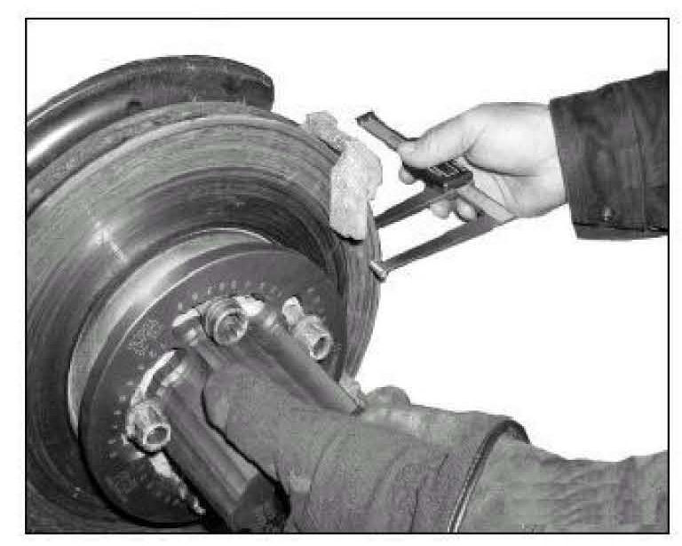
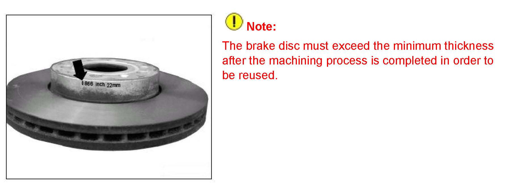
Each brake disc has the minimum allowed thickness cast, stamped or laser-etched into the disc hub.
^ Measure the brake disc thickness in 4 locations using either the Pro Cut International(TM) disc thickness measuring tool Part No.50-902 or the Hunter Engineering Company disc thickness measuring tool Part No.25-99-2. Measurements MUST be taken the same distance from the brake disc outer circumference to ensure consistency.
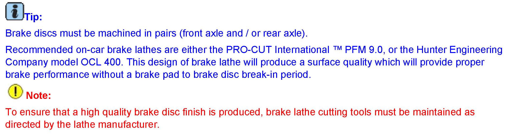
Brake Disc Machining
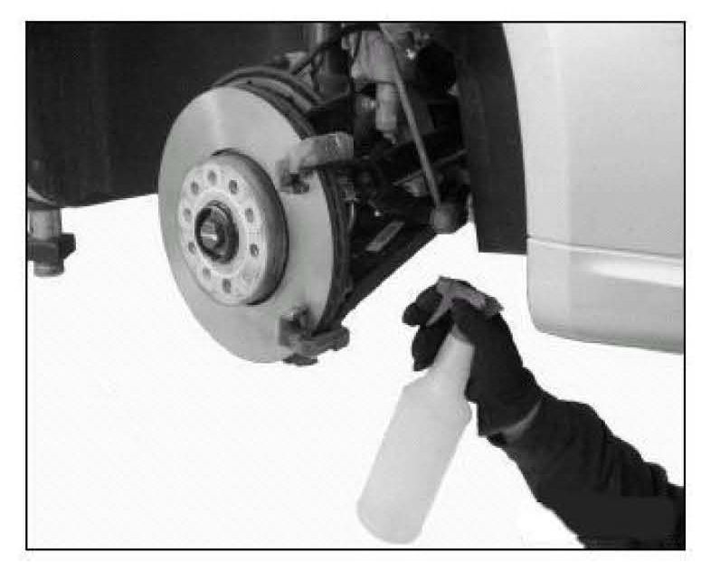
^ Follow the brake lathe manufacturer's instructions for set-up and machining.
^ Wash the brake disc with a soap and water solution upon completion of resurfacing to remove all machining particles.
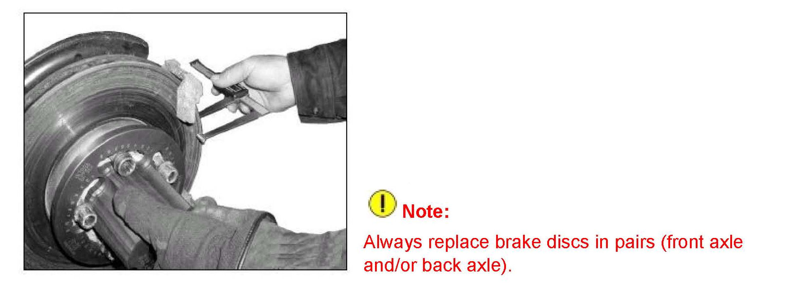
^ Re-measure brake disc thickness in 4 locations using either the Pro Cut disc thickness measuring tool Part No.50-902 or the Hunter disc thickness measuring tool Part No.25-99-2, to verify that minimum thickness is still exceeded. If recorded brake disc measurement is less than the minimum thickness, the brake disc MUST be replaced.
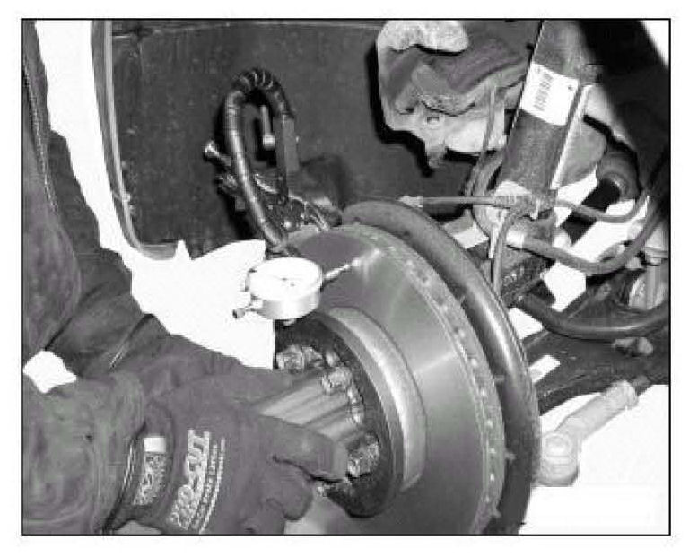
^ Measure brake disc lateral run out using Pro Cut Disc Lateral run out measuring kit Part No.50-700FC or the Hunter Disc Lateral run out measuring kit Part No.25-128-2 with a dial indicator.
^ Run out must not exceed 0.1 mm.
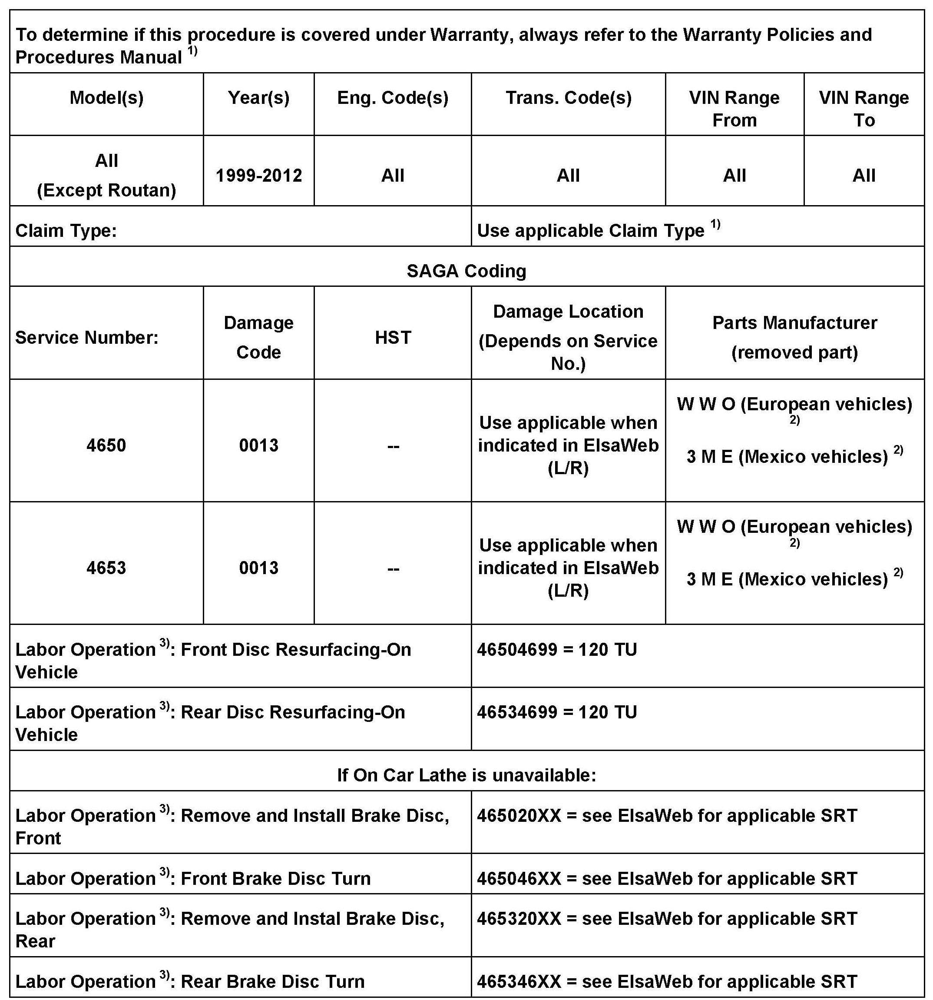
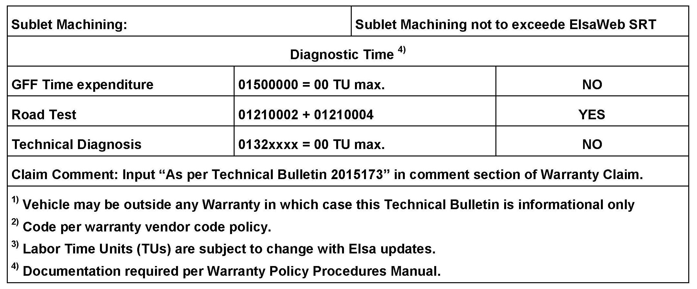
Warranty
Required Parts and Tools
No Special Parts required.
Additional Information
All part and service references provided in this Technical Bulletin are subject to change and/or removal.
Always check with your Parts Dept. and Repair Manuals for the latest information.